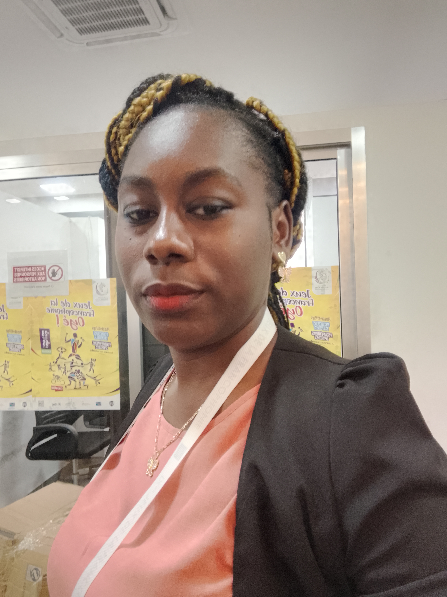
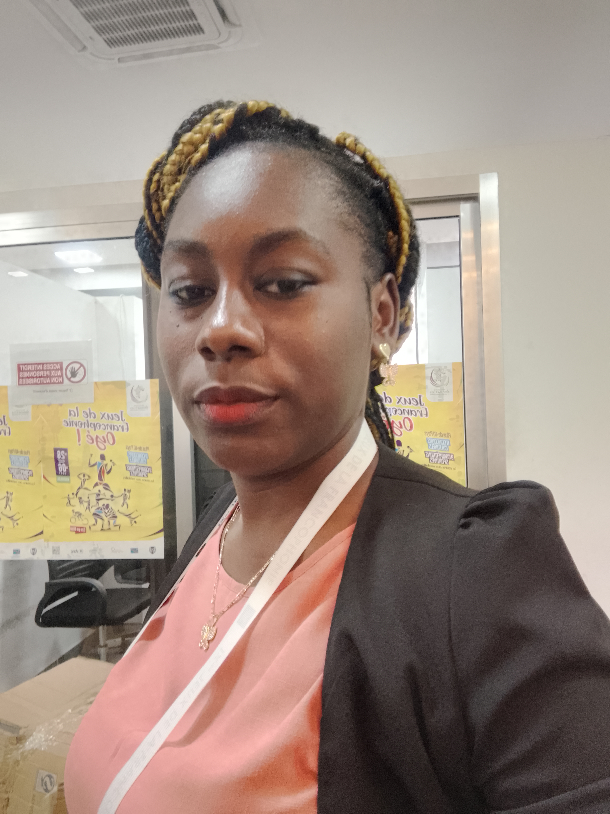

Bienvenue sur mon Portfolio
Laurelle Vivaldye GANZIKADEMBI
Nationalité : Congolaise de la Rép. du Congo
Laurelle Vivaldye GANZIKADEMBI
Nationalité : Congolaise de la Rép. du Congo
Je suis une femme volontaire, dotée d'un esprit d'équipe, du sens de l'organisation et de communication.
Je suis un développeur web passionné , et la réalisation de sites web et applications en formation. Mon objectif est de finaliser ma formation et de toujours apprendre de nouvelles technologies et de proposer des solutions innovantes aux défis que je rencontre.
En dehors du développement, j'aime explorer différents passe-temps pour nourrir ma créativité et mon bien-être.
Vous souhaitez discuter d'un projet ou avez une question ? Remplissez le formulaire ci-dessous et je reviendrai vers vous rapidement.
Un site web conçu pour présenter mes compétences et mon parcours.
Une application mobile développée pour organiser les tâches.